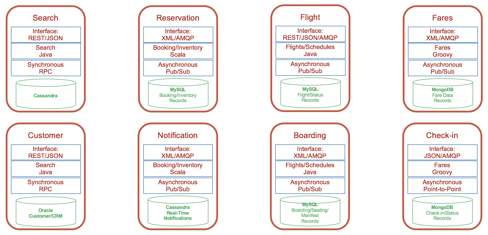

Iteration
2 Details for MPCS 51205
Each
iteration
will deliver an incremental accretion of work toward the final
project deliverable. Some assignments will require you to
work individually and each team member will submit his or her
deliverable, and other assignments will require you to work as a
team and submit a single team deliverable. Generally (see
specifics within each Iteration), each student will be
responsible for delivering some piece of the work
(documentation, code, etc.). You will be
evaluated on the clarity and
depth of your analysis of these and other
deliverables. "Deep Thinking" as well as "Shallow
Thinking" are generally obvious. Deep Thinking requires
time and....thought.
Unless use of a tool is specified,
you may take pictures of whiteboards, papers, napkins, etc. as
submission artifacts. From a remote collaborative
design perspective, previous teams have happily leveraged free
tools including excalidraw.com, which
allows for collaborative brainstorming among remote
team members. However, some artifact
deliverables will need to be in the form of formal models.
When a formal artifact is required, it will be so specified.
See
the
syllabus for information on grading. Turning in Iteration
assignments is required. Submit your assignments as a
tarball to the repository according to the directions on each
Iteration page.
Iteration
2 Due: 5:00 pm, Tuesday,
November 10, 2026
High Level Microservices
Architecture and Initial Domain Model:
You are to work together as a team on these deliverables except when you are
instructed to individually
deliver something.
Considering the functional and technical requirements of the
system (to be named by the class as a whole), envision the high
level Microservices architecture and domain models.
Deliverable One:
Microservices Architecture Blueprint
Leveraging your Context Map and Domain Vision Statement and your
first pass at a high-level architecture, produce a draft of a
Microservices Architecture Blueprint. This is a draft-level
model of the Microservices that you envision (at this point in
your thinking) developing in the final system. This can and
should be quite high-level, and should look something like this
example taken from a hypothetical airline's Microservice
architecture:

As a team, continue your development of your high level
Microservices architecture model of your proposed solution.
This model will be a continuation of the "rough sketch" of your
"current architectural approach", becoming much refined (and
implementable) during this iteration. Your depiction should
become formal at this point. Your architecture rendition
should continue to include more key architectural components
and interactions as your architecture takes on more
form. It should also become more "realizable". You
should include technologies that you envision will come into play
within the different Microservices (the technology stacks).
This will depend largely on your teams choice of core language
(e.g., python, Java, etc.)
Notice that each Microservice will have its own data store, in
addition to its own technology stack. Technologies may
certainly (and often will) repeat across multiple
Microservices. That said, there is nothing wrong with using several common
frameworks and tools within the Microservices, including core
languages. For example, if one person on your team wants to
tackle (just using the above example unrelated to our project) the
"Reservation" Microservice in Java, another person on your team
could (theoretically) tackle the "Boarding" Microservice with a
python stack. Your goal is neither to produce a polyglot
Tower of Babel nor a singular technology stack standardized across
all Microservices, but rather, and this is the goal, to choose the best set of technologies
for the each Microservice, as a bounded context
implementing a core business capability. As a simple
example, some data store requirements might best be suited to a
NoSQL database such as Cassandra or MongoDB, and other
requirements might best be suited to a relational database, such
as Oracle or MySQL. The ability to choose the right
technologies for each Microservice is one of the key "selling
points" of such an architecture.
Deliverable Two:
Define Your Messages & Services Model
Based on the functional requirements of the system, use whatever
tool you prefer to create a first pass of the following artifacts
from Lecture 2:
Microservice Architecture Catalog (cf. MP Table 2.2 p. 62)
Service Operation Analysis (you can leave Actor and Use Case/User
Story blank for this first draft)
Service Operation Decomposition (you can focus on Responsibilities
and Parameters and Return Value for this first draft)
Technology Stack Decomposition (fill in what you can for this
first draft)
Event Model
Follow the API-FIRST principle and describe the central messages
that will be passed between the various services and services and
components in your model. Feel free to modify the five
artifacts above to suit your team's needs. They are intended
to help you as a team think
and communicate about
what you are going to build. These will need to be created
in some tool, the choice of which is up to your team. You
may choose Word, Excel, Visual Paradigm, or any other tool.
Specifically, think about what messages will be passed from one
service to another asynchronously, say over RabbitMQ (we will get
to the technical details of this communication later)? What
messages should be passed in a synchronous fashion, perhaps via
RPC/RMI/gRPC or a RESTful interface? What patterns might you
leverage in your communication (e.g., Request/Reply, which we will
talk about in our conversation about asynchronous
communication)? Again, we will get to the technical details
of these various patterns later. This messaging model does
not need to be complete (and certainly not "final"), but it does
need to depict your understanding at the moment of the services
you have identified along with their responsibilities and
relationships and key communication paths. You are to work
collaboratively in producing this initial model, whiteboarding
various design alternatives, finally documenting the current state
of your model in and the above artifacts in your tool of choice.
Deliverable Three:
Produce a Draft of One Domain Model
Working as a team and based on the functional requirements of the
system and your understanding of our discussion of analysis
modeling and the Building Blocks of Domain Driven Design (see
especially Evans, Domain-Driven Design Part II, pp. 63ff), produce
a draft Domain Model for a single Bounded Context drawn
from your working Context Map and High Level Architecture as a
first Analysis exercise (cf. Evans, 293ff.). You are free to
choose whichever one of your Bounded Contexts you feel is
especially rich in content. Using any UML-based drawing tool
or whiteboard, produce a Domain Model draft depicting the salient
Entities, Value Objects, Services, Modules, Aggregates, Factories
and Repositories you feel may play a useful role in your eventual
solution. The goal of this analysis activity is to
articulate a high-level vocabulary of the "things" you feel will
drive your eventual design of your auction site, focusing again on
a single bounded context.
The intent here is not to design a particular microservice in
terms of how it is going to be implemented, but rather to
focus on the requirements and WHAT the Bounded Context of
the microservice is responsible for.
Deliverable Four: Begin Documenting your Architecture
Decisions
Referring to Michael Nygard's documentation of ADR usage here
and https://adr.github.io
and https://adr.github.io/madr/,
begin documenting your key architectural decisions. You
should store your ADRs in your github repository. You may
find Richards & Ford, Fundamenntals of Software
Architecture, chapters 4, 7, 8, 9 and 19 helpful in this
exercise.
Resources:
You may find the following online resources
helpful as you work together to produce these deliverables:
Domain-Driven
Design Reference
Domain-Driven
Design Quickly
GitHub
References Points on Domain-Driven Design
http://guide.agilealliance.org/guide/crc.html
http://agilemodeling.com/artifacts/crcModel.htm
http://css.dzone.com/articles/crc-cards-primer
You should also begin to contemplate your user HTML and REST-based
interface. You may find the following sites helpful:
http://getbootstrap.com/
http://learn.shayhowe.com/html-css/
http://www.codecademy.com/
You can find a quick index to UML diagrams here.
Submission:
For Iterations:
Have your designated Team Lead upload your team's IterationN files
and any supporting materials to the repo. Please include a README
text file that contains any instructions or additional details for
the TAs to assist with grading.
Setup:
When you open the invitation URL in a browser tab, you will have
to complete the following steps:
Github may ask you to grant permission for GitHub Classroom to
have access to your GitHub account. If you are asked this
question, you should say yes and grant access to Github Classroom.
You must click “Accept this assignment” or your repository will
not actually be created. Do not skip this step!
If you run into any issues, please ask for help.